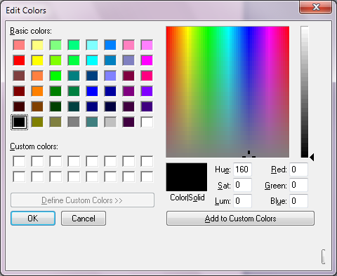
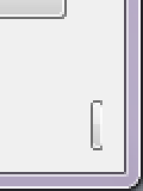
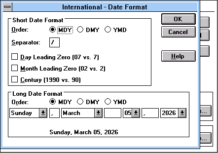
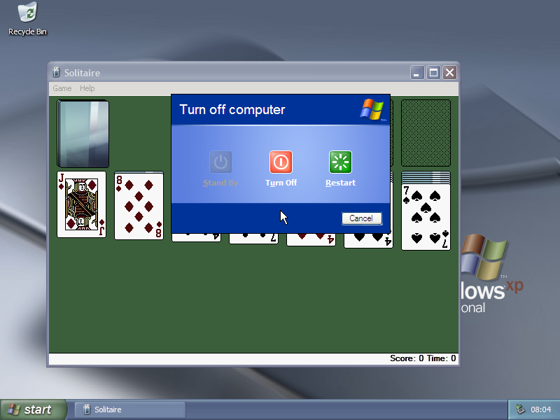
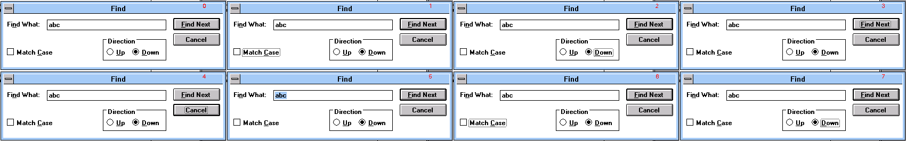

The checkbox under the floorboards
Years ago I wrote an AutoHotkey script that grabbed the edges of Windows programs and dragged them outward, including programs that were built as fixed-size boxes and never meant to be resized. Most of the time you just get more empty grey. But in Microsoft Paint I found something: a transparency checkbox, sitting outside the part of the window anyone was ever shown. You could almost reach it with the Tab key, but it was greyed out.
For a long time that was a half-memory. So I went back with better tools and a Windows XP machine to confirm it. Here's Paint's Image ▸ Attributes dialog the way every XP user saw it. Then drag the slider; it does exactly what my old script did.

There it is: a whole Transparency group, with Use Transparent background color, a Select Color… button and a colour swatch. My memory had it in "colour options" and off to the side. It's actually in Attributes, directly underneath the bottom edge. It's not hidden in the Windows sense; every control in it is visible. It's simply been placed where the window doesn't reach.
Reading the live window from the inside, with a little tool I'll get to below, gives the exact status:
OUTSIDE id=65535 groupbox @11,198 231x78 visible "Transparency"
OUTSIDE id=1068 checkbox @20,218 189x16 visible,disabled,tabstop "Use &Transparent background color"
OUTSIDE id=1069 pushbutton @50,241 110x23 visible,disabled,tabstop "Select &Color..."
(the dialog's client area is only 198 pixels tall)
So my memory was half right about the Tab key. The checkbox is marked as a tab stop, but Windows skips disabled controls when you Tab, so you circle Width → Height → Pixels → Colors → OK → Cancel → Default and never land on it. Its keyboard shortcut, Alt+T, is dead for the same reason. I also saved a GIF, reopened the dialog and probed again: still disabled. Nothing I could find in XP Paint ever switches it on.
Why is it there? Paint in Windows 98 and 2000 could save GIFs through Microsoft's image filters, and GIF is the format where a "transparent colour" means something. My read is that the controls stayed in the dialog template when the feature lost its home, and someone shortened the dialog instead of deleting them. That's cheaper and safer, because code elsewhere may still look those controls up by ID. Vista's ribbon-era Paint rebuilt the dialog, and the group is gone.
Is this rare? Making the search methodical
Dragging edges finds things one window at a time. To search properly, I worked with Claude Code to build two small C programs (both are on GitHub, public domain):
dlgscanreads dialog templates straight out of.exe,.dll,.cpland.muifiles. That includes 32-bit and 64-bit PE files and the 16-bit NE files of Windows 3.x. It runs on Linux, macOS or Windows; you don't need the old Windows running to scan its files. For every dialog it compares each control's rectangle with the dialog's own size.winprobeasks a running Windows where every control actually ended up. Programs often move controls after a dialog is created, so templates can lie. It also walks the real Tab order, can force-resize any window (the AutoHotkey trick, done properly), and has acrawlmode. Crawl launches a program, opens every menu item that ends in "…" (the classic promise that a dialog will appear), flips through every property-sheet tab, presses every>>expander, and probes and photographs each window.
Then I pointed them at three generations of Windows: Windows for Workgroups 3.11 running in DOSBox-X, Windows XP SP3 in a throwaway QEMU virtual machine, and a real Windows 7 SP1 box. The XP disk is booted in snapshot mode, so nothing the crawler did was saved.
| Windows | Files | Unique dialogs | Dialogs hiding something off-canvas | Rate |
|---|---|---|---|---|
| Windows for Workgroups 3.11 | 75 | 456 | 53 | 11.6% |
| Windows XP SP3 | 439 | 4,602 | 113 | 2.5% |
| Windows 7 SP1 | 584 | 5,794 | 97 | 1.7% |
So yes, it's rare, and getting rarer. Most of those flagged dialogs turn out to be deliberate engineering patterns rather than forgotten features. Genuinely orphaned features like Paint's Transparency group number about a handful across all three systems. The fall from 11.6% to 1.7% has a reason too: as Windows went on, more UI moved out of individual windows. Windows 7 Paint's entire ribbon shows up to winprobe as a single window called UIRibbonWorkPane, so there is nothing left inside it to misplace.
The scanners report five kinds of hidden control:
- OUTSIDE sits entirely past the window's edge or at negative coordinates. This is Paint's Transparency group.
- GHOST sits inside the window but is switched invisible: present, laid out, never shown.
- ZEROSIZE is 0 pixels wide or tall but still has text or a tab stop.
- DISABLED and COVERED controls are greyed out for good, or buried under a sibling control.
Sorting the hundreds of hits into why they exist turned out to be the interesting part. Here's the taxonomy.
1. Buttons that exist only for a keyboard shortcut
This was the most common deliberate trick, and once you see it you can't unsee it. Windows dialogs give a control a keyboard shortcut through the underlined letter in its label. But some labels belong to things that can't receive focus, like group boxes, static text or a colour swatch. So designers drop an invisible or off-screen button carrying the same letter. Pressing Alt+letter "clicks" a button nobody can see.
The colour picker's 6-pixel button (1990 → 2009)
The standard Windows colour picker (Paint's Edit colors in Windows 7) has a swatch labelled Color|Solid. That underlined o belongs to a pushbutton whose entire caption is &o. In the template it is 4 dialog units wide and parked at (300, 200), outside the dialog. It's in the 16-bit COMMDLG.DLL of Windows 3.11, in XP, and in every language of Windows 7. In Bulgarian it's л, in Japanese O(O).

winprobe reveal. Bottom right: the sliver.
&o button. On Windows 7 it is visible, enabled and not a tab stop. Alt+O reaches it; Tab never does. In XP Paint it's disabled.Four invisible 1×1 buttons in Control Panel (Windows 3.11)
The 3.11 International control panel has four group boxes: Date, Currency, Time and Number Format. Each has a Change… button with no shortcut of its own. Hidden at (300, 200) are four buttons, each one pixel square, captioned "D", "U", "T" and "N". I booted WfW 3.11 and pressed Alt+D:


Hibernate, 44 screens to the right (Windows XP)
XP's Turn off computer box famously hides Hibernate: hold Shift and Stand By turns into Hibernate. Raymond Chen noted that you can also just press H. Looking at msgina.dll shows why: a real Hibernate pushbutton is always in the dialog, parked at (30093, 30049) dialog units. That's roughly 45,000 pixels across, about 44 screen widths away on a 1024-pixel display. It never needs to be visible for its shortcut to work. On my XP VM hibernation is switched off, so H did nothing there.

Raymond Chen also explains why hidden controls keep working shortcuts: it's on purpose, for keyboard accessibility. Hiding a control removes it from view, not from the keyboard. To really kill one you also have to disable it, which is exactly what XP Paint did to Transparency.
2. The common-dialog contract: everything must exist
When an app customises a standard dialog (Open, Font, Find, Colour), Windows' common-dialog code still expects every control it knows about to be present, by ID. So programs that don't want a control can't delete it. Instead they shove it out of the way:
- Clock (3.11) wanted a Font dialog without sizes, styles or effects. Its template crams a dozen unwanted controls into a little pile off the right edge, some of them 2×10 units.
- Paintbrush (3.11) puts the Font dialog's "Color:" label and drop-down at exactly (300, 300).
- Regedit, Control Panel, Add Fonts, Shell "Locate" park unwanted file-list boxes at (−100, −100). HyperTerminal on XP uses (−10, −10) at 1×1.
- Windows 7 Notepad's Font dialog takes the opposite approach. Strikeout, Underline, Color, Apply and Help are all laid out in the window but hidden and disabled, because Notepad doesn't ask for effects.
3. Vestigial features: Cardfile 1992 → Notepad 2009
This one connects across the decades. Windows 3.11's Cardfile has its own Find dialog. Its template still contains Match Whole Word Only, enabled and a tab stop, placed 37 units below a 62-unit-tall dialog. At runtime Cardfile also tells the common dialog to hide it, so it's belt and braces. Tabbing through the live dialog confirms it's unreachable:

Seventeen years later, Windows 7 Notepad's Find dialog still contains "Match whole word only", at the same control ID, 1040, as a hidden, disabled ghost. Notepad never offered whole-word search. So I resurrected it with winprobe show, ticked it, and searched a file containing "concatenate the cat" for cat:


4. Folding dialogs: panels stored side by side
Some dialogs keep alternative layouts parked off-canvas and slide in the right one. The most extreme is the Task Scheduler Schedule page, in XP's xpsp2res.dll and Windows 7's mstask.dll. The dialog is 253 units wide, and four complete panels sit in a row beyond its right edge:
Others in the same family: Windows 3.11's 386 Enhanced ▸ Virtual Memory, whose Change>> button unfolds "New Swapfile Settings" and the once-exotic Use 32-Bit Disk Access. Character Map's whole "Advanced view" panel waits below its window on XP and 7. Remote Desktop keeps a hidden Options >>. And most Windows 7 property sheets (Mouse, Sound, Internet Options, Region) carry a hidden Help button tucked under the bottom edge, waiting for a flag nobody sets.
5. Things nobody was meant to see
- Test hooks. XP's full-text search engine
ftsrch.dllhas a static at (14563, 16383) whose text reads "No Data: This static is used to automate testing". A test harness read it with the sameWM_GETTEXTmy tools use. - A developer's scratch dialog. XP's Dr. Watson (
drwtsn32.exe) ships a dialog containing a label that says "This is to the right.", placed to the right, past the edge, next to a 250-unit-wide button labelled Test. - Data stored in the UI. WfW 3.11's network setup keeps the name of its help file in invisible 0×0 labels (
setup.hlp,control.hlp), and some of its dialogs are captionedcard.name.goes.here. - Labels for screen readers. XP's Date and Time panel contains 0×0 hidden labels: Month, Year, Day, Hour, Minute, Second, AM/PM. They give each spin box a name for accessibility tools without drawing anything.
- Focus sinks. Two Windows 7 property pages (network device properties and Media Player sharing) hold a 1×1 edit box at (10000, 10000) that is still a tab stop, somewhere safe to put the keyboard focus.
- Credits. XP's Power Options has an invisible line, "Technology developed by American Power Conversion", that appears only when a UPS is attached.
- Fonts that never were. XP's Font dialog hides an Axes: group with six sliders below its bottom edge. It looks like a leftover of support for Adobe's Multiple Master fonts.
Program by program
The crawler visited 55 programs and Control Panel applets on Windows 7 and 48 on XP, and I drove the Windows 3.11 ones by hand. Here are the iconic ones: what each is, where its secret is, and whether you can actually reach it.
| Program | Hidden element | How to find it | Tab? | Enabled? |
|---|---|---|---|---|
| Paint (XP) | Transparency group: "Use Transparent background color", "Select Color…" | Image ▸ Attributes, then grow the dialog downward | No (disabled controls are skipped) | No |
| Paint (7) / any colour picker | &o button for "Color|Solid" | Edit colors; it's a 6-pixel sliver past the bottom-right corner | No | Yes on 7 (Alt+O works); no in XP Paint |
| Notepad (XP, 7) | "Match whole word only" in Find and Replace; Effects, Apply and Help in Font | Ghosts: inside the dialog, invisible | No | No. Resurrected, it does nothing. |
| Cardfile (3.11) | "Match Whole Word Only" | 37 units below the Find dialog | No (hidden at runtime too) | Yes in the template |
| Control Panel ▸ International (3.11) | 1×1 buttons D, U, T, N | Press Alt+D / U / T / N | No | Yes, and they work |
| Date and Time (XP) | 0×0 labels Month, Year, Day, Hour, Minute, Second, AM/PM | Only a screen reader "sees" them | No | n/a |
| Date and Time (7) | A hidden Help button on each tab | Under the bottom edge | No | Hidden |
| Turn off computer (XP) | Hibernate button at (30093, 30049) | Shift, or press H | No | When hibernation is on |
| Character Map (XP, 7) | Character set, Group by, Search panel | Tick "Advanced view" and the window grows over it | Not until shown | Yes once shown |
| Volume Control (XP) | Advanced Controls: two hidden checkboxes "1" and "2"; a Balance label at x=4625 | Template only | No | Hidden |
| Remote Desktop (7) | Hidden Options >> button | Ghost in the main window | No | Hidden |
| Calculator, Solitaire, Minesweeper, Pinball, Sticky Notes | Nothing | They draw themselves or have nothing to hide | n/a | n/a |


What it tells us about how they worked
Classic Windows dialogs were drawn in a dialog editor and compiled into the program as a static template: a list of controls with coordinates in "dialog units", which scale with the system font. That one fact explains almost everything above:
- Moving is cheaper than deleting. Code elsewhere looks controls up by ID. Delete one and something may crash; move it to (300, 200) and nothing does. Shrinking a dialog over a feature you've cut is the lowest-risk edit there is.
- The keyboard was a first-class citizen. Many of the hidden controls exist purely so a shortcut letter works. They're accessibility plumbing, not mistakes.
- Templates are shared, so features outlive their programs. Notepad's whole-word checkbox exists because the Find template has it, not because Notepad ever used it.
- Localisation reshapes everything. Translators resized every dialog for every language (the colour picker is 298 units wide in English, 331 in Greek), so "just off the edge" had to be generous: 300, 1000, 10000.
- The trend ends with the ribbon. As UI moved into custom-drawn surfaces (DirectUI, the ribbon, games that paint themselves), there were fewer windows to misplace. Rare in 2001, rarer in 2009, and in modern apps there's often nothing for these tools to find at all.
Try it yourself
# scan any Windows binary, from any OS ./dlgscan-linux-x64 /path/to/WINDOWS/system32/*.dll # on a running Windows: find, then reveal, the hidden parts of an open dialog winprobe probe "Attributes" winprobe tab "Attributes" winprobe reveal "Attributes"
Source, prebuilt binaries for Windows, Linux and macOS, every scan result and every crawl log are at github.com/williamsharkey/windows-secrets. One warning from experience: crawl opens menu items in ways real people never would, and on XP it crashed Paint, Regedit and Packager along the way. Use a virtual machine.
Next: every one of these controls is a real window that another program can move, resize, re-label and even re-parent into a different application. Cross-process puppetry of classic Windows apps is its own strange hobby, and it's coming in a follow-up.